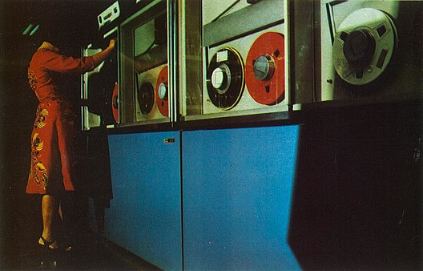

Sejarah komputer berawal dari abad ke-19, ketika Charles Babbage mencoba untuk mendesain komputer mekanik yang bernama Mesin Analitikal. Desain ini menjadi basis kerangka desain komputer sekarang.
Secara garis besar, pengembangan komputer terbagi dalam empat generasi:
Generasi pertama dimulai ketika komputer digunakan dalam akademi dan militer, seperti Komputer Atanasoff-Berry dibuat pada tahun 1937 untuk menyelesaikan sistem persamaan linear dan komputer Colossus untuk memecahkan kode rahasia Jerman Nazi. Kemudian, ENIAC yang dibangun pada tahun 1946 menjadi komputer pertama untuk tujuan umum. Ketika komputernya dinyalakan untuk pertama kali, Philadelphia mengalami mati listrik. Komputer generasi ini menggunakan tabung vakum untuk menyimpan data dan ukurannya memakan satu ruangan.
Generasi kedua dimulai ketika transistor menggatikan tabung vakum. UNIVAC diperkenalkan ke publik tahun 1951 untuk penggunaan komersial. Kemudian, pada tahun 1953, IBM memulai bisnis komputernya dengan merilis IBM 650 dan IBM 700. Berbagai bahasa pemrograman mulai dikembangkan dan komputer mulai memiliki memori dan sistem operasi.
Generasi ketiga dimulai ketika teknologi transistor meningkat menjadi sirkuit terpadu. Komputer mini adalah inovasi yang signifikan dalam generasi ini dan mempengaruhi generasi komputer selanjutnya. NASA menggunakan komputer generasi ini untuk melancarkan Program Apollo, seperti Komputer Bimbingan Apollo untuk mempermudah kendali Apollo Command/Service Module. Digital Equipment Corporation menjadi perusahaan komputer nomor dua di belakang IBM dengan komputer PDP dan VAX-nya. Komputer ini membawa ke pengembangan sistem operasi yang berpengaruh, Unix.
Generasi keempat dimulai pada dasawarsa 1970-an ketika penemuan MOSFET dan integrasi berskala besar selanjutnya membawa ke pengembangan mikroprosesor di awal 1970-an. komputer pribadi yang semakin kecil berkat mikroprosesor mulai berkembang, dimulai dari komputer rumahan dan komputer meja. Teknologi selanjutnya adalah laptop dan ponsel cerdas yang sangat fenomenal, membawa berbagai perusahaan teknologi ke dalam perang paten atas ponsel cerdas.
Pengertian komputer
Komputer adalah alat yang dipakai untuk mengolah data menurut perintah yang telah diprogram. Kata komputer semula dipergunakan untuk menggambarkan orang yang perkerjaannya melakukan perhitungan aritmetika, dengan atau tanpa alat bantu, tetapi arti kata ini kemudian dipindahkan kepada mesin itu sendiri. Pada awalnya, pengolahan informasi hampir eksklusif berhubungan dengan masalah aritmatika, tetapi komputer modern dipakai untuk banyak tugas yang tidak berhubungan dengan matematika.[2][3]
Secara luas, Komputer dapat didefinisikan sebagai suatu peralatan elektronik yang terdiri dari beberapa komponen, yang dapat bekerja sama antara komponen satu dengan yang lain untuk menghasilkan suatu informasi berdasarkan program dan data yang ada. Konsep komponen-komponen komputer ini berasal dari arsitektur von Neumann, ketika John von Neumann memaparkan arsitekturnya pada tahun 1945.
Generasi Komputer
Generasi pertama
Dengan terjadinya Perang Dunia II, negara-negara yang terlibat dalam perang tersebut berusaha mengembangkan komputer untuk mengeksploitasi potensi strategis yang dimiliki komputer. Hal ini meningkatkan pendanaan pengembangan komputer serta mempercepat kemajuan teknik komputer. Pada tahun 1941, Conrad Zuse, seorang insinyur Jerman, membangun sebuah komputer, Z3, untuk mendesain pesawat terbang dan peluru kendali.[4]
Blok sekutu juga membuat kemajuan lain dalam pengembangan kekuatan komputer. Tahun 1943, Inggris menyelesaikan komputer pemecah kode rahasia yang dinamakan Komputer Colossus untuk memecahkan kode rahasia yang digunakan Jerman Nazi. Dampak pembuatan Colossus tidak terlalu memengaruhi perkembangan industri komputer dikarenakan dua alasan. Pertama, Colossus bukan merupakan komputer serbaguna, tetpai ia hanya didesain untuk memecahkan kode rahasia. Kedua, keberadaan mesin ini dijaga kerahasiaannya hingga satu dekade setelah perang berakhir.
Usaha yang dilakukan oleh Amerika Serikat pada saat itu menghasilkan suatu kemajuan lain. Howard Aiken, seorang insinyur Harvard yang bekerja dengan IBM, berhasil memproduksi kalkulator elektronik untuk Angkatan Laut Amerika Serikat. Kalkulator tersebut berukuran panjang setengah lapangan bola kaki dan memiliki rentang kabel sepanjang 500 mil. The Harvard-IBM Automatic Sequence Controlled Calculator, atau Mark I, merupakan komputer relai elektronik. Ia menggunakan sinyal elektromagnetik untuk menggerakkan komponen mekanik. Mesin tersebut beroperasi dengan lambat (ia membutuhkan 3-5 detik untuk setiap perhitungan) dan tidak fleksibel (urutan kalkulasi tidak dapat diubah). Kalkulator tersebut dapat melakukan perhitungan aritmatik dasar dan persamaan yang lebih kompleks.
Perkembangan komputer lain pada masa itu adalah Electronic Numerical Integrator and Computer (ENIAC), yang dibuat atas kerja sama antara pemerintah Amerika Serikat danUniversitas Pennsylvania. Terdiri dari 18.000 tabung vakum, 70.000 resistor, dan 5 juta titik solder, komputer tersebut merupakan mesin yang sangat besar dan mengonsumsi daya sebesar 160 kW.[4] Dirancang oleh John Presper Eckert dan John Mauchly, ENIAC merupakan komputer serbaguna yang bekerja 1000 kali lebih cepat dibandingkan Mark I.
Pada pertengahan 1940-an, John von Neumann bergabung dengan tim Universitas Pennsylvania dalam usaha membangun konsep desain komputer yang hingga 40 tahun mendatang masih dipakai dalam teknik komputer. Von Neumann mendesain Electronic Discrete Variable Automatic Computer (EDVAC) pada tahun 1945 dengan sebuah memori untuk menampung baik program ataupun data. Teknik ini memungkinkan komputer untuk berhenti pada suatu saat dan kemudian melanjutkan pekerjaannya kembali. Kunci utama arsitektur von Neumann adalah Unit Pemroses Sentral, yang memungkinkan seluruh fungsi komputer untuk dikoordinasikan melalui satu sumber tunggal. Tahun 1951, UNIVAC I (Universal Automatic Computer I) yang dibuat oleh Remington Rand, menjadi komputer komersial pertama yang memanfaatkan model arsitektur Von Neumann tersebut.
Baik Sensus Amerika Serikat maupun General Electric memiliki UNIVAC. Salah satu hasil mengesankan yang dicapai oleh UNIVAC dalah keberhasilannya dalam memprediksi kemenangan Dwilight D. Eisenhower dalam pemilihan presiden tahun 1952.[5][6]
Komputer Generasi pertama dikarakteristik dengan fakta bahwa instruksi operasi dibuat secara spesifik untuk suatu tugas tertentu. Setiap komputer memiliki program kode biner yang berbeda yang disebut bahasa mesin. Hal ini menyebabkan komputer sulit untuk diprogram dan membatasi kecepatannya. Ciri lain komputer generasi pertama adalah penggunaan tabung vakum (yang membuat komputer pada masa tersebut berukuran sangat besar) dan silinder magnetik untuk penyimpanan data.
Generasi kedua
Pada tahun 1948, penemuan transistor sangat memengaruhi perkembangan komputer. Transistor menggantikan tabung vakum di televisi, radio, dan komputer. Akibatnya, ukuran mesin-mesin elektrik berkurang drastis.[7]
Transistor mulai digunakan di dalam komputer mulai pada tahun 1956. Penemuan lain yang berupa pengembangan memori inti-magnetik membantu pengembangan komputer generasi kedua yang lebih kecil, lebih cepat, lebih dapat diandalkan, dan lebih hemat energi dibanding para pendahulunya. Mesin pertama yang memanfaatkan teknologi baru ini adalah superkomputer. IBM membuat superkomputer bernama Stretch, dan Sprery-Rand membuat komputer bernama LARC. Komputer-komputer ini, yang dikembangkan untuk laboratorium energi atom, dapat menangani sejumlah besar data, sebuah kemampuan yang sangat dibutuhkan oleh peneliti atom. Mesin tersebut sangat mahal dan cenderung terlalu kompleks untuk kebutuhan komputasi bisnis, sehingga membatasi kepopulerannya.

Hanya ada dua LARC yang pernah dipasang dan digunakan. Satu terdapat di Lawrence Radiation Labs di Livermore, California, dan yang lainnya di US Navy Research and Development Center di Washington D.C. Komputer generasi kedua menggantikan bahasa mesin dengan Bahasa rakitan. Bahasa rakitan adalah bahasa yang menggunakan singkatan-singakatan untuk menggantikan kode biner.
Pada awal 1960-an, mulai bermunculan komputer generasi kedua yang sukses di bidang bisnis, universitas, dan pemerintahan. Komputer-komputer generasi kedua ini merupakan komputer yang sepenuhnya menggunakan transistor. Mereka juga memiliki komponen-komponen yang dapat diasosiasikan dengan komputer pada saat ini, yaitu pencetak, penyimpanan dalam disket, memori komputer, sistem operasi, dan program komputer.
Salah satu contoh penting komputer pada masa ini adalah IBM 1401 yang diterima secara luas di kalangan industri. Pada tahun 1965, hampir seluruh bisnis-bisnis besar menggunakan komputer generasi kedua untuk memproses informasi keuangan.
Program yang tersimpan di dalam komputer dan bahasa pemrograman yang ada di dalamnya memberikan fleksibilitas kepada komputer. Fleksibilitas ini meningkatkan kinerja dengan harga yang pantas bagi penggunaan bisnis. Dengan konsep ini, komputer dapat mencetak faktur pembelian konsumen dan kemudian menjalankan desain produk atau menghitung daftar gaji. Beberapa bahasa pemrograman mulai bermunculan pada saat itu. Bahasa pemrograman COBOL dan Fortran mulai umum digunakan. Bahasa pemrograman ini menggantikan kode mesin yang rumit dengan kata-kata, kalimat, dan formula matematika yang lebih mudah dipahami oleh manusia. Hal ini memudahkan seseorang untuk memprogram dan mengatur komputer. Berbagai macam karier baru bermunculan (pemrogram, analis sistem, dan ahli sistem komputer). Industri perangkat lunak juga mulai bermunculan dan berkembang pada masa komputer generasi kedua ini.
Generasi ketiga
Walaupun transistor dalam banyak hal mengungguli tube vakum, namun transistor menghasilkan panas yang cukup besar, yang dapat berpotensi merusak bagian-bagian internal komputer. Batu kuarsa menghilangkan masalah ini. Jack Kilby, seorang insinyur di Texas Instruments, mengembangkan sirkuit terpadupada tahun 1958. IC mengkombinasikan tiga komponen elektronik dalam sebuah piringan silikon kecil yang terbuat dari pasir kuarsa. Pada ilmuwan kemudian berhasil memasukkan lebih banyak komponen-komponen ke dalam suatu chip tunggal yang disebut semikonduktor. Hasilnya, komputer menjadi semakin kecil karena komponen-komponen dapat dipadatkan dalam chip. Kemajuan komputer generasi ketiga lainnya adalah penggunaan sistem operasi (operating system) yang memungkinkan mesin untuk menjalankan berbagai program yang berbeda secara serentak dengan sebuah program utama yang memonitor dan mengkoordinasi memori komputer.
Generasi keempat
Setelah IC, tujuan pengembangan menjadi lebih jelas: mengecilkan ukuran sirkuit dan komponen-komponen elektrik. Large Scale Integration (LSI) dapat memuat ratusan komponen dalam sebuah chip. Pada tahun 1980-an, Very Large Scale Integration (VLSI) memuat ribuan komponen dalam sebuah chip tunggal.
(ULSI) meningkatkan jumlah tersebut menjadi jutaan. Kemampuan untuk memasang sedemikian banyak komponen dalam suatu keping yang berukurang setengah keping uang logam mendorong turunnya harga dan ukuran komputer. Hal tersebut juga meningkatkan daya kerja, efisiensi dan keterandalan komputer. Chip Intel 4004 yang dibuat pada tahun 1971 membawa kemajuan pada IC dengan meletakkan seluruh komponen dari sebuah komputer (central processing unit, memori, dan kendali input/output) dalam sebuah chip yang sangat kecil. Sebelumnya, IC dibuat untuk mengerjakan suatu tugas tertentu yang spesifik.
Kini, sebuah mikroprosesor dapat diproduksi dan kemudian diprogram untuk memenuhi seluruh kebutuhan yang diinginkan. Tidak lama kemudian, setiap peranti rumah tangga seperti microwave, oven, televisi, dan mobil dengan electronic fuel injection (EFI) dilengkapi dengan mikroprosesor.
Perkembangan yang demikian memungkinkan orang-orang biasa untuk menggunakan komputer biasa. Komputer tidak lagi menjadi dominasi perusahaan-perusahaan besar atau lembaga pemerintah. Pada pertengahan tahun 1970-an, perakit komputer menawarkan produk komputer mereka ke masyarakat umum. Komputer-komputer ini, yang disebut minikomputer, dijual dengan paket peranti lunak yang mudah digunakan oleh kalangan awam. Peranti lunak yang paling populer pada saat itu adalah program word processing dan spreadsheet. Pada awal 1980-an, video game seperti Atari 2600 menarik perhatian konsumen pada komputer rumahan yang lebih canggih dan dapat diprogram.
Pada tahun 1981, IBM memperkenalkan penggunaan Personal Computer (PC) untuk penggunaan di rumah, kantor, dan sekolah. Jumlah PC yang digunakan melonjak dari 2 juta unit pada tahun 1981 menjadi 5,5 juta unit pada tahun 1982. Sepuluh tahun kemudian, 65 juta PC digunakan. Komputer melanjutkan evolusinya menuju ukuran yang lebih kecil, dari komputer yang berada di atas meja (desktop computer) menjadi komputer yang dapat dimasukkan ke dalam tas (laptop), atau bahkan komputer yang dapat digenggam (palmtop).
IBM PC bersaing dengan Apple Macintosh dalam memperebutkan pasar komputer. Apple Macintosh menjadi terkenal karena memopulerkan sistem grafis pada komputernya, sementara saingannya masih menggunakan komputer yang berbasis teks. Macintosh juga memopulerkan penggunaan peranti mouse.
Pada masa sekarang, kita mengenal perjalanan IBM compatible dengan pemakaian CPU: IBM PC/486, Pentium, Pentium II, Pentium III, Pentium IV (Serial dari CPU buatan Intel). Juga kita kenal AMD k6, Athlon, dsb. Ini semua masuk dalam golongan komputer generasi keempat.
Seiring dengan menjamurnya penggunaan komputer di tempat kerja, cara-cara baru untuk menggali potensial terus dikembangkan. Seiring dengan bertambah kuatnya suatu komputer kecil, komputer-komputer tersebut dapat dihubungkan secara bersamaan dalam suatu jaringan untuk saling berbagi memori, peranti lunak, informasi, dan juga untuk dapat saling berkomunikasi satu dengan yang lainnya. Jaringan komputer memungkinkan komputer tunggal untuk membentuk kerja sama elektronik untuk menyelesaikan suatu proses tugas. Dengan menggunakan perkabelan langsung (disebut juga Local Area Network), atau [kabel telepon, jaringan ini dapat berkembang menjadi sangat besar.
Generasi kelima
Mendefinisikan komputer generasi kelima menjadi cukup sulit karena tahap ini masih sangat muda. Contoh imajinatif komputer generasi kelima adalah komputer fiksi HAL9000 dari novel karya Arthur C. Clarke berjudul 2001: Space Odyssey. HAL menampilkan seluruh fungsi yang diinginkan dari sebuah komputer generasi kelima. Dengan kecerdasan buatan (artificial intelligence atau AI), HAL dapat cukup memiliki nalar untuk melakukan percapakan dengan manusia, menggunakan masukan visual, dan belajar dari pengalamannya sendiri.
Walaupun mungkin realisasi HAL9000 masih jauh dari kenyataan, banyak fungsi-fungsi yang dimilikinya sudah terwujud. Beberapa komputer dapat menerima instruksi secara lisan dan mampu meniru nalar manusia. Kemampuan untuk menterjemahkan bahasa asing juga menjadi mungkin. Fasilitas ini tampak sederhana. Namun fasilitas tersebut menjadi jauh lebih rumit dari yang diduga ketika programmer menyadari bahwa pengertian manusia sangat bergantung pada konteks dan pengertian ketimbang sekadar menterjemahkan kata-kata secara langsung.
Banyak kemajuan di bidang desain komputer dan teknologi yang semakin memungkinkan pembuatan komputer generasi kelima. Dua kemajuan rekayasa yang terutama adalah kemampuan pemrosesan paralel, yang akan menggantikan model non Neumann. Model non Neumann akan digantikan dengan sistem yang mampu mengkoordinasikan banyak CPU untuk bekerja secara serempak. Kemajuan lain adalah teknologi superkonduktor yang memungkinkan aliran elektrik tanpa ada hambatan apapun, yang nantinya dapat mempercepat kecepatan informasi.
Jepang adalah negara yang terkenal dalam sosialisasi jargon dan proyek komputer generasi kelima. Lembaga ICOT (Institute for new Computer Technology) juga dibentuk untuk merealisasikannya. Banyak kabar yang menyatakan bahwa proyek ini telah gagal, namun beberapa informasi lain bahwa keberhasilan proyek komputer generasi kelima ini akan membawa perubahan baru paradigma komputerisasi di dunia.